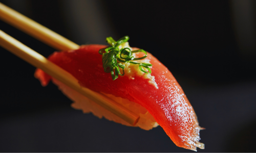

初めての方へ
ホームページをご覧頂き有難うございます。
初めての方でも気軽にお立ち寄りいただき「また来たい!」と思える店を目指しスタッフ一同日々精進しております。
ぜひ、当店ならではの味わいとおもてなしを心ゆくまでお楽しみください。
皆様のご来店を心よりお待ちしております。
当店は二店舗ございますので、以下のボタンよりご希望の店舗をご確認下さい。
初めての方でも気軽にお立ち寄りいただき「また来たい!」と思える店を目指しスタッフ一同日々精進しております。
ぜひ、当店ならではの味わいとおもてなしを心ゆくまでお楽しみください。
皆様のご来店を心よりお待ちしております。
当店は二店舗ございますので、以下のボタンよりご希望の店舗をご確認下さい。

塩町店のコンセプト
鮨をメインに提供しております。店主は瀬戸内海の離島(家島)で生まれ、島の豊かな海で獲れる新鮮な魚介で育ちました。その自慢の地元の恵みを活かした本物のおいしさと店主のひと手間加えた熟練の技が光る握りを真心こめてご提供いたします。目の前で職人の技が見れるカウンターがおすすめです。掘りごたつのテーブル席も完備しております。

福中店のコンセプト
活魚・一品料理をメインに提供しております。瀬戸内海の荒波にもまれ育った活魚を水槽から直前に出し調理いたします。お客様のお好みの調理法「生・焼・煮・揚・蒸・にぎり」にて天然魚の本当の旨みを色々な形でご堪能下さい。二階、三階は完全個室です。接待や大切な方とのお食事など幅広いシーンにおすすめです。一階はカウンターも完備しております。
お品書き

鯛の握り
新鮮な鯛を厳選し、繊細な味わいを引き出しました。

穴子握り
柔らかい穴子に秘伝のタレを絡めた逸品。
店舗ギャラリー
塩町店


福中店